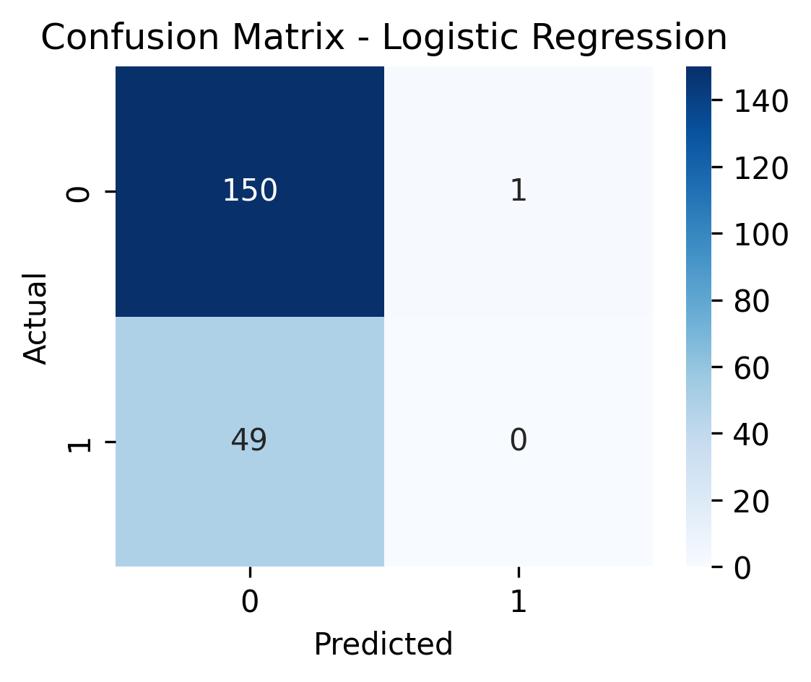
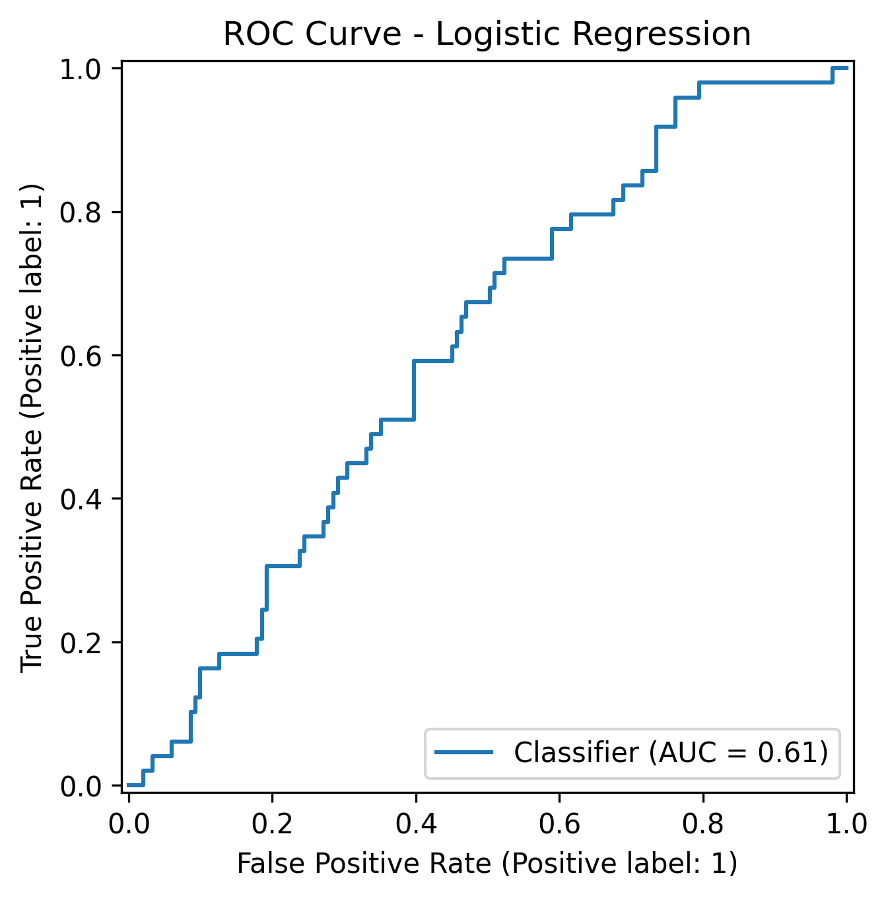
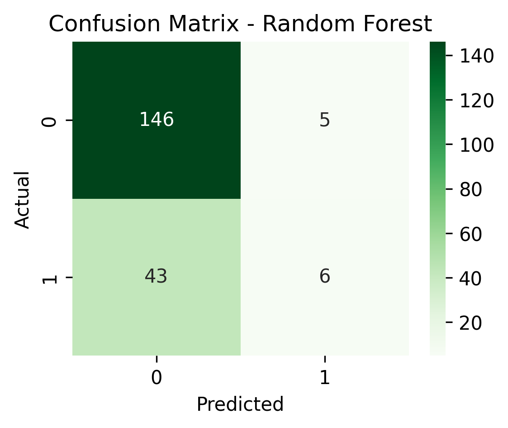
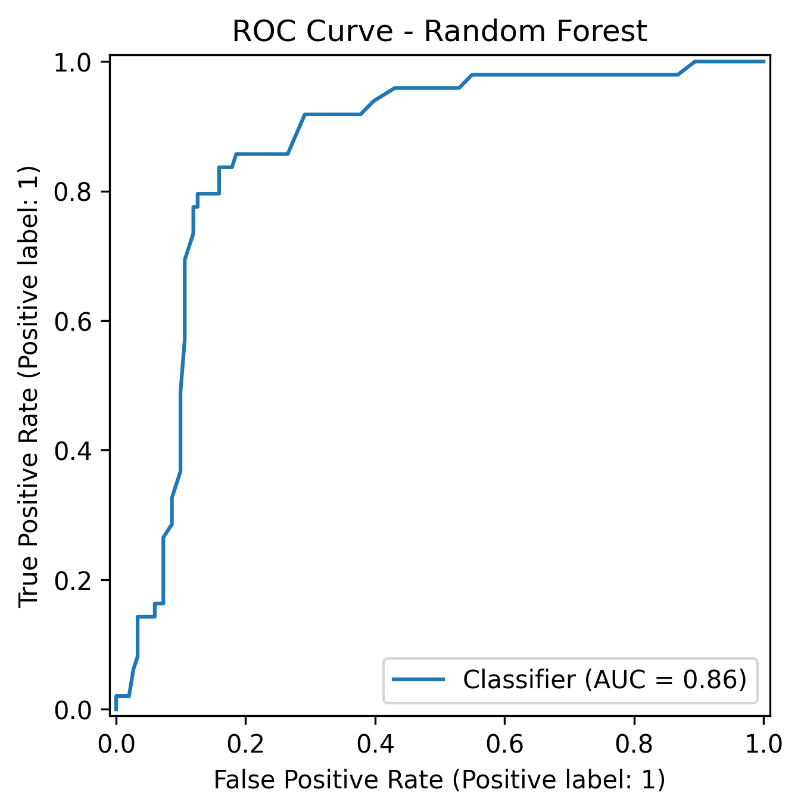
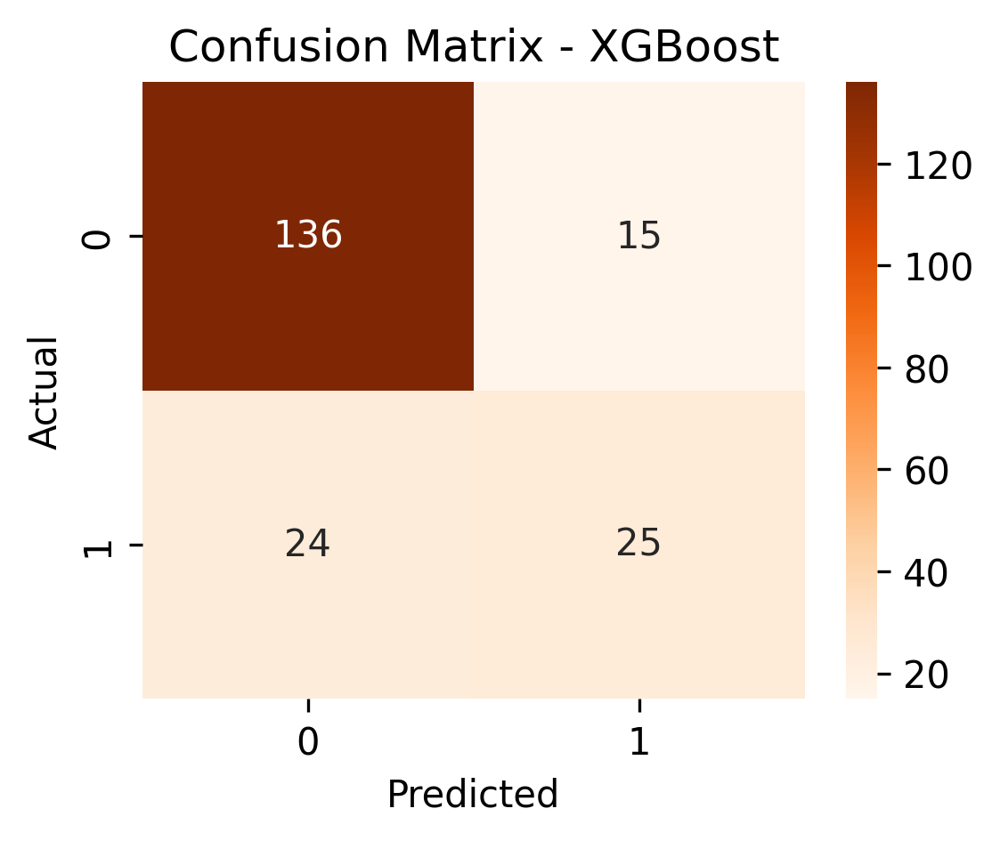

Insurance Fraud Detection (Python + Scikit-Learn + XGBoost + SHAP)
Overview
Built a full fraud-detection pipeline using Logistic Regression, Random Forest, and XGBoost on real insurance claim data. Improved AUC from 0.61 to 0.86 by moving to tree-based models and added SHAP interpretability to explain fraud drivers. Delivered an end-to-end ML system with preprocessing, model training, evaluation, and serialization for real-world scoring.
What I Did
- Defined the business objective, metric targets, and analysis scope.
- Built and validated the data, modeling, and reporting workflow.
- Packaged outputs for stakeholder interpretation and decision support.
Results/Impact
Tech Stack
- Fraud Analytics, Machine Learning, Python, SHAP, XGBoost
Deliverables
- Project brief: (add file)
- Slides/report: (add file)
- Dashboard/model file: (add file)
- SQL/notebook/code bundle: (add file)
Project Notes
Description: Built a full fraud-detection pipeline using Logistic Regression, Random Forest, and XGBoost on real insurance claim data. Improved AUC from 0.61 to 0.86 by moving to tree-based models and added SHAP interpretability to explain fraud drivers. Delivered an end-to-end ML system with preprocessing, model training, evaluation, and serialization for real-world scoring. Skills Demonstrated: Fraud Analytics, Machine Learning, Python, SHAP, XGBoost Project Status: Planning
Executive Summary
Insurance fraud is a massive problem that costs companies billions every year. I wanted to see how far machine learning could go in spotting suspicious claims before they cause damage.
I built an end-to-end fraud detection pipeline in Python using real insurance claim data - training three models (Logistic Regression, Random Forest, and XGBoost) to identify patterns that suggest fraud.
At first, the Logistic Regression model couldn��t catch any fraudulent cases. But once I moved to tree-based methods, accuracy and recall improved dramatically.
The Random Forest achieved a ROC-AUC of 0.86, while XGBoost came close at 0.83, both showed strong ability to separate fraudulent from legitimate claims.
I quickly realized how data science can protect both companies and honest customers.
Data & Tools
- Dataset: 1,000 insurance claim records
- Features: 39 total (policy data, claim details, customer demographics, vehicle info)
- Target variable:
fraud_reported(Y/N) - Tools: Python, Pandas, Scikit-Learn, XGBoost, Matplotlib, Seaborn
- Environment: VS Code + virtual environment (
venv)
The dataset was slightly imbalanced �� about 25% of claims were fraudulent, creating a realistic challenge for model precision and recall.
Process
1. Data Cleaning
After importing the dataset, I converted the target variable to binary and checked for missing values.
Numerical columns used median imputation, categorical columns used the most frequent value.
df["fraud_reported"] = df["fraud_reported"].map({"Y": 1, "N": 0})
numeric_transformer = Pipeline(steps=[
("imputer", SimpleImputer(strategy="median"))
])
categorical_transformer = Pipeline(steps=[
("imputer", SimpleImputer(strategy="most_frequent")),
("encoder", OneHotEncoder(handle_unknown="ignore"))
])2. Preprocessing Pipeline
Using Scikit-Learn��s ColumnTransformer, I created a preprocessing pipeline for numeric and categorical features.
This made the workflow fully reusable across all models.
preprocessor = ColumnTransformer(
transformers=[
("num", numeric_transformer, numeric_features),
("cat", categorical_transformer, categorical_features)
]
)3. Model Training
I trained three models and compared their performance.
Each model was wrapped in a Pipeline, combining preprocessing and training in one step.
| Model | Description | Key Strength |
|---|---|---|
| Logistic Regression | Baseline model | Simple and interpretable |
| Random Forest | Bagging ensemble | Captures non-linear relationships |
| XGBoost | Gradient boosting | Optimized performance and control |
Random Forest Example
rf_clf = Pipeline(steps=[
("preprocess", preprocessor),
("model", RandomForestClassifier(
n_estimators=200,
random_state=42,
n_jobs=-1
))
])
rf_clf.fit(x_train, y_train)4. Model Evaluation and Saving
After training, each model was evaluated on precision, recall, F1-score, and ROC-AUC.
Confusion matrices and ROC curves were visualized using Seaborn and Matplotlib.
y_pred = rf_clf.predict(x_test)
y_proba = rf_clf.predict_proba(x_test)[:, 1]
print(classification_report(y_test, y_pred))
print("ROC-AUC:", roc_auc_score(y_test, y_proba))
joblib.dump(rf_clf, "models/randomforest_model.pkl")All models were serialized using Joblib, so they can be reloaded for live predictions or API deployment.
Results
| Model | ROC-AUC | Precision (Fraud) | Recall (Fraud) | Accuracy |
|---|---|---|---|---|
| Logistic Regression | 0.61 | 0.00 | 0.00 | 0.75 |
| Random Forest | 0.86 | 0.55 | 0.12 | 0.76 |
| XGBoost | 0.83 | 0.62 | 0.51 | 0.81 |
Performance Comparison

Logistic Regression
The baseline model underperformed �� it failed to detect any fraudulent cases.
This confirmed that simple linear models struggle when class imbalance and feature interactions are strong.


Random Forest
The Random Forest model captured meaningful non-linear patterns.
It raised the AUC to 0.86, performing best overall in distinguishing fraud from non-fraud.


XGBoost
XGBoost performed similarly to Random Forest but was slightly more balanced �� it caught more fraud cases with fewer false alarms.


Key Insights
Linear models can��t handle complex fraud data.
The Logistic Regression model failed to detect non-linear relationships, missing all fraud cases.
Tree-based models excel at imbalance.
Random Forest and XGBoost used multiple weak learners to find subtle signals that linear models missed.
XGBoost provided the best trade-off.
It balanced recall (51%) with a strong ROC-AUC (0.83), which is great for early fraud screening.
Feature engineering could improve recall further.
Features like claim-to-premium ratio or customer tenure trends could expose hidden fraud indicators.
Model Interpretability (SHAP Analysis)

After training, I used SHAP (SHapley Additive exPlanations) to visualize how each feature influenced fraud predictions. The plot shows that claims labeled as ��Major Damage�� or ��Total Loss�� had the strongest positive impact on the model��s fraud likelihood. Interestingly, customer-level details like hobbies (e.g., chess or cross-fit) and policy premiums also appeared as strong differentiators, suggesting that lifestyle or policy value patterns may indirectly flag higher-risk cases.
Features such as auto year, zip code, and claim amounts had subtler effects, mostly balancing prediction confidence rather than flipping outcomes. Adding SHAP turned the project from a black-box model into one where I could explain why the AI decided a claim looked suspicious.
Reflection
This project taught me how much structure matters in machine learning, and not just which model you choose, but how you prepare and feed the data into it.
It was rewarding to see how quickly performance improved once I moved from Logistic Regression to Random Forest and XGBoost.
That jump from 0.61 to 0.86 in AUC made me realize that good insight often comes from iteration, not just code.
Working through this project helped me get comfortable building end-to-end ML systems, from cleaning data and building pipelines to evaluating, saving, and reusing models.
Files & Outputs
train_model.py�� training and evaluation pipelinepredict_sample.py�� sample prediction scriptmodels/�� saved models (.pklformat)- Charts:
[model_auc_comparison.png][logreg_confusion_matrix.png][randomforest_confusion_matrix.png][xgboost_confusion_matrix.png][randomforest_roc_curve.png][xgboost_roc_curve.png][xgboost_shap_summary.png]
Full training scripts and model files available upon request.
Next Steps
- Apply SMOTE resampling to address class imbalance
- Package the trained model into a Flask API for live prediction testing
Attribution
Designed and developed by Markuss Saule.